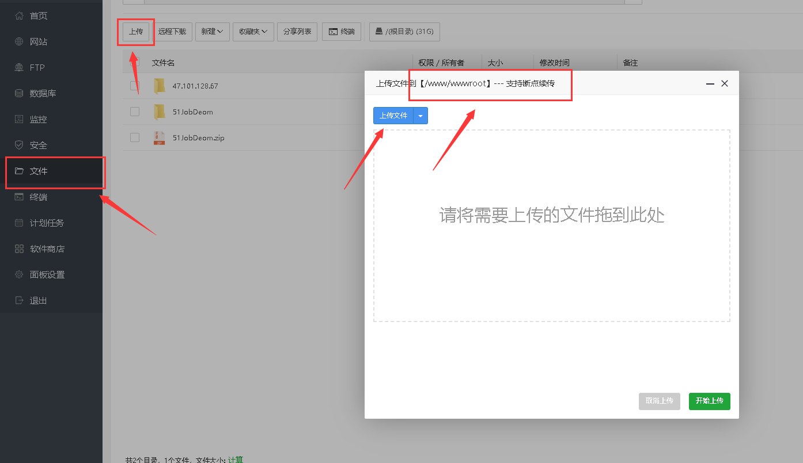
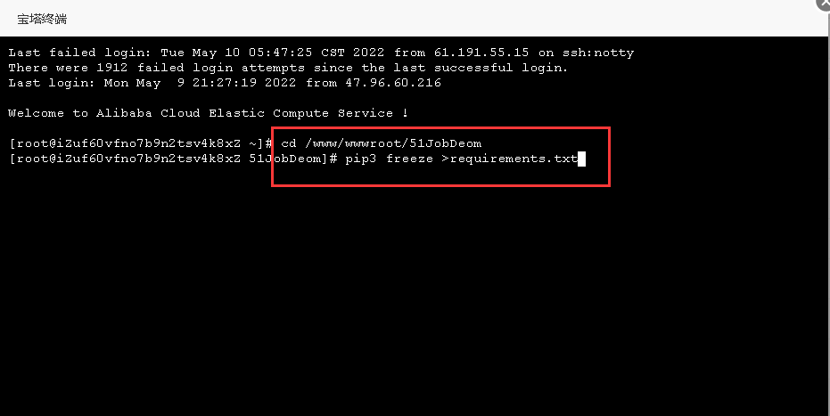
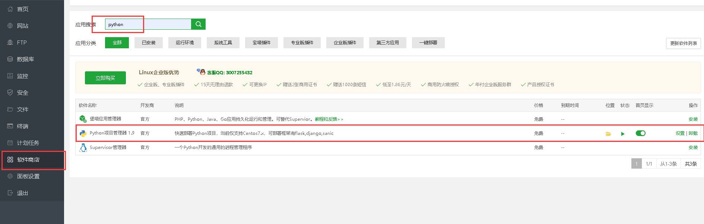
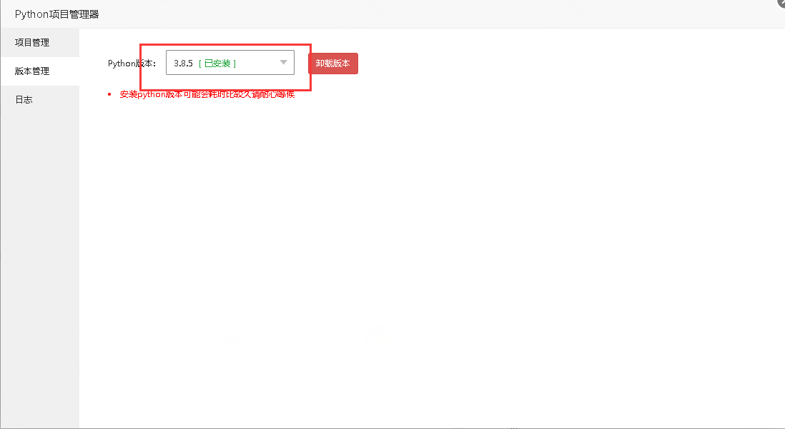
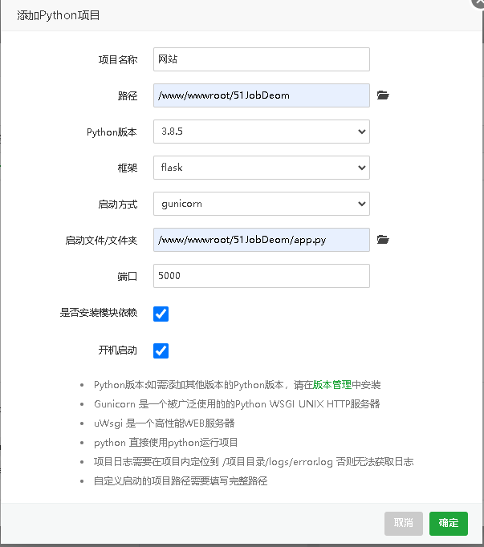
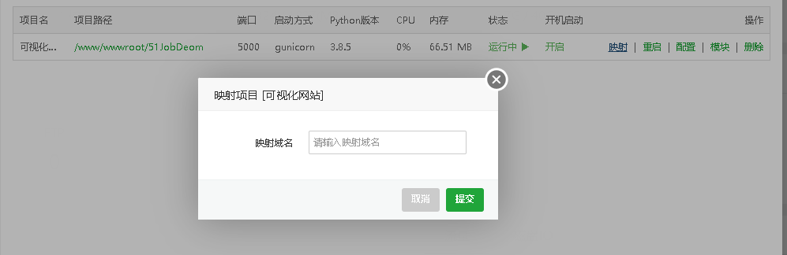
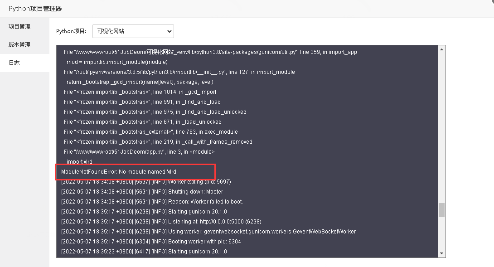
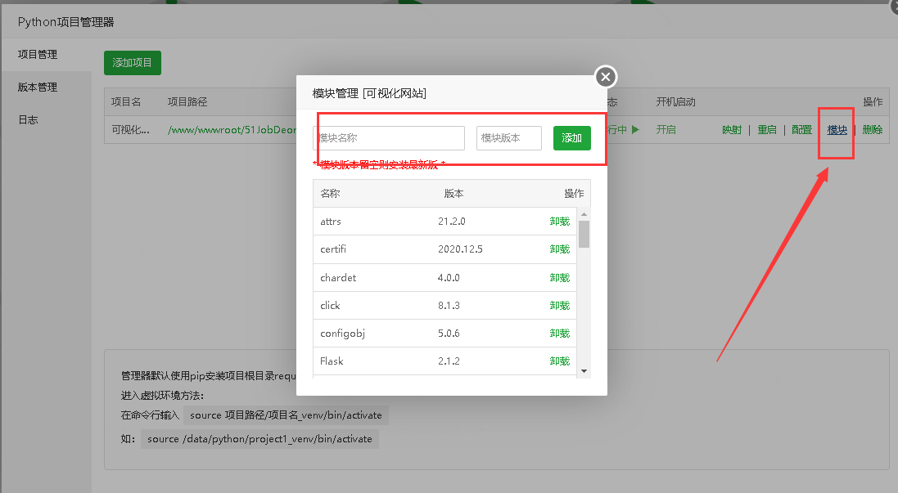
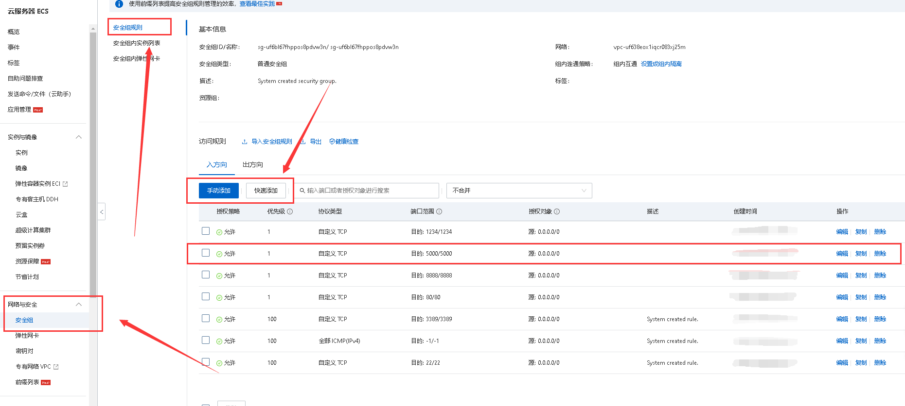
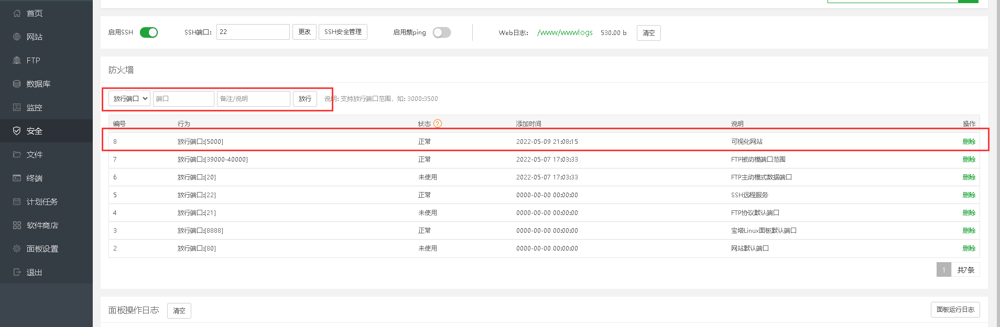

宝塔部署Flask项目问题
1、概述
近期作者一直在写《数据导入与预处理技术》这门课程的课程设计，总体来说还是挺有意思的，用的正则表达式爬取了51Job招聘网站中的Java岗位的信息，大概爬取了一万条左右，又针对薪资的类别不同做了一些数据清洗，后来把爬取的数据存储到了Excle中，以及用到了自带的SQLite数据库中，用了Python的Flask框架进行前端部署，整体写了几天时间也算是写完了，但是毕竟这个课程设计是要考核的，所以后来寻思着部署到云服务器上万一还能加分呢，哈哈哈哈哈哈，所以就尝试了很久用宝塔部署Flask项目，中间也出了不少的问题，所以这一期就把整个流程给分享一下，也算是总结一下自己遇到的一些问题
2、部署过程
2.1 上传项目

首先我们先把需要上传的项目打包成压缩包，在宝塔面板里面上传到服务器中，其中压缩包要上传到/www/wwwroot/路径下面，上传完成之后，我们直接进行解压即可！
2.2 导入项目依赖
把项目解压之后，来到项目文件夹根目录里面，打开终端，输入pip3 freeze >requirements.txt导入项目依赖

2.3 安装python项目管理器
导入项目依赖后，我们找到软件商店，搜索python项目管理器，进行下载安装

2.4 安装python并添加项目
安装下载完python项目管理器后，安装我们项目需要的python版本，可以参考自己在本地运行项目时候的版本，选择对应版本进行安装，安装完成之后，可以打开终端输入python -V查看版本信息（其中V是大写）

安装完python之后，我们就可以进行添加项目了，也是一样在python管理器中，点击项目管理进行添加python项目

其中需要解释的是项目名称可以自己随意起，路径选择自己项目根目录，python版本就选择自己安装的版本即可，框架要更改为Flask，启动方式默认就好，启动文件改成我们自己的启动文件，一般flask项目的启动文件都是app.py，端口号就根据我们本地启动的时候对应的端口号进行填写即可，再将下面的两个勾选框勾选，一路确定即可。
添加项目完毕后，我们点击映射，输入自己的IP地址进行映射

2.5 启动查看报错信息
当我们项目添加完毕后，启动直挤的项目，查看python项目管理器里面的日志，来看看报错原因

如果是缺少模板或者库文件，可以直接在项目模块里面进行搜索添加，注意添加自己项目对应的版本支持就中

2.6 端口号开启（容易遗忘）
当我们把这所有的工作做完之后，发现输入自己的IP地址，后面追随着自己的端口号5000，好像还是不能打开网站，显示无法访问，这个时候，我们就应该检查一下自己的端口号是否开启，这里指的开启主要是阿里云安全组开启和宝塔面板开启
1、云服务器控制台端口开启
作者用的是阿里云服务器，所以就以阿里云的云服务器控制台举例，我们进入控制台，找到网络与安全，在里面有个安全组，我们找到安全组规则，进行手动添加我们需要开启的端口号，由于flask项目的端口号是5000，所以我们就把5000的端口号开启，添加成功后，这就代表云服务器控制台端口开启成功了

2、宝塔面板端口放行（容易遗忘）
我们在宝塔面板里面找到左侧的安全栏，在右边有个防火墙，把自己需要开启的端口进行放行即可，然后这样我们就完成了端口号放行，作者也就是在这里面忘记了对端口号进行放行，导致很长一段时间输入自己的网站都没办法访问。

3、总结
综上，以上步骤完成之后，我们再次输入自己的网站地址后，就可以正常访问我们部署的Flask项目了，这里作者也把自己的网站发出来供参考一下哈哈哈：http://47.101.128.67:5000/，自己写的小Demo，没有那么多高大上的功能，前端也是自己随便找了一个模板就套进来了，其它的完成过程中倒是没有什么问题，就是在写岗位展示中，其中的分页功能确实困扰了作者好几天，最终实在没办法，只能自己手写一个工具类，来实现分页展示，如果不写分页功能，那上万条数据展示在同一个页面，对这个页面的加载也是一种很大的负担。
完成项目的细节处理，随后作者有时间会单独出一期爬取51Job网站的可视化分析项目的从0到1的实现，这大概就是Flask项目部署的全部过程了。
从3月22到今天5月10日，已经有接近两个月没有更新自己的文档了，确实这段时间的学习时间安排的太少了，生活中实在太多烦恼了，不过现在这些都已经过去了，这几天过去了，我相信会慢慢的回到常态化，经常在这里记录自己的学习心得和一些问题分享的。
本博客所有文章除特别声明外，均采用 CC BY-SA 4.0 协议 ，转载请注明出处！